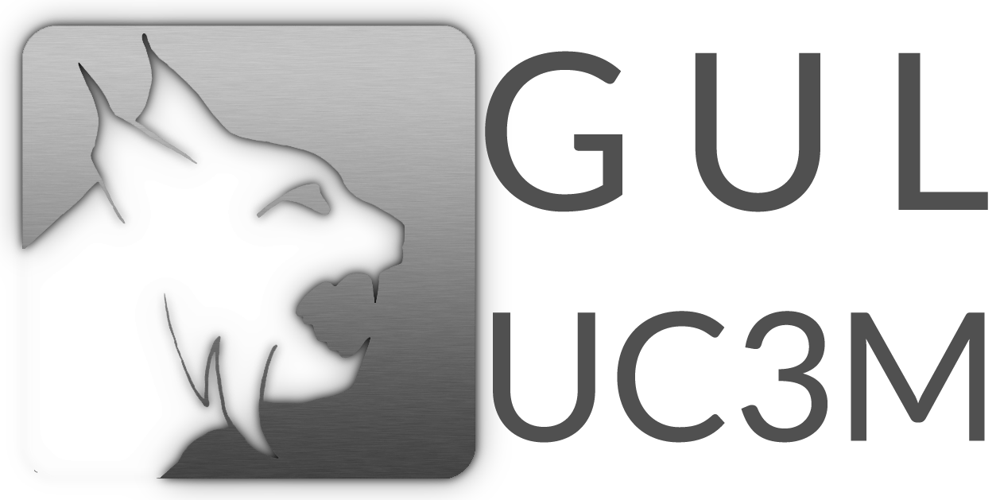

<h1 class="text-purple">El Evento 2016</h1>

<h3 class="text-purple"><em>Un lugar para iniciarse en el cacharreo</em></h3>

<p>24-27 Octubre 2016, Universidad Carlos III de Madrid (Leganés)</p>

<p>Organizan:</p>

<p><a href="http://asrob.uc3m.es"></a>
<a href="http://uc3music.github.io/"></a></p>

<p>Colaboran:</p>

<p><a href="http://gul.es/"></a>
<a href="https://twitter.com/UC3Montoya"></a>
<a href="https://twitter.com/clubvuelouc3m"></a></p>

<p>Patrocina:</p>

<p><a href="http://tienda.bricogeek.com//"></a></p>
